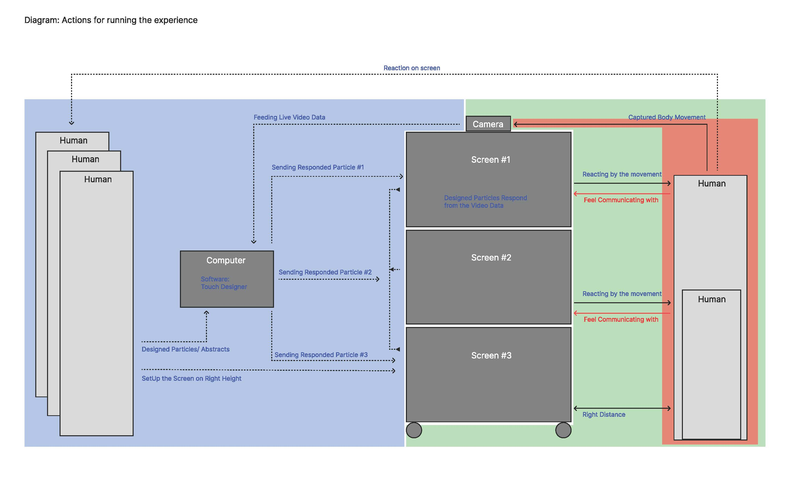
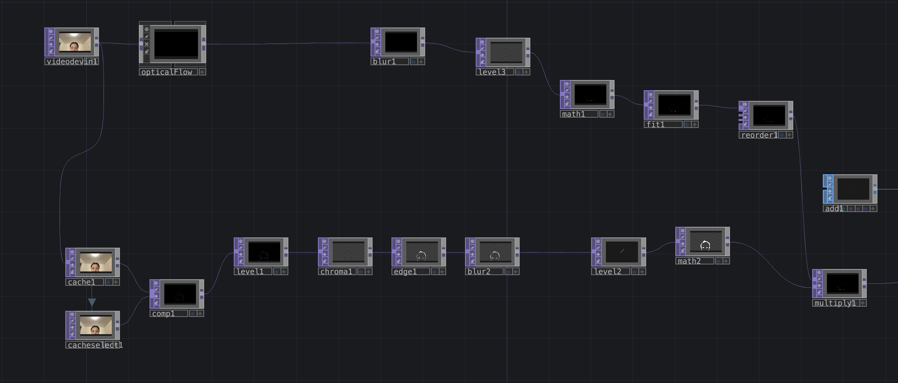

Experiment of Motion Interaction without Kinect in TouchDesigner
I showcased a project video at the Getty Museum, which was created by the TouchDesigner team and featured an immersive, interactive installation blending AI and visual arts. While exploring this project, I began to create a diagram to better understand its working system and identify specific aspects I wanted to examine closely.
The Project: https://derivative.ca/community-post/night-getty-what-i-see-what-you-get/62059
The references: Video 1, Video 2
To experiment with motion detection interaction, I used TouchDesigner. However, my initial attempt following a tutorial didn't yield the desired results. As you can see in the video, it appeared that the particles were not responding effectively to the motion data from the camera, resulting in a weak response.
To improve this, I incorporated optical flow to capture more nuanced motion details. Nevertheless, this alone wasn't sufficient to achieve the desired level of precision. To address this, I introduced another function called "cache." This addition helped enhance the quality of my motion data and removed extraneous data from the background.
By combining these two functions, the interaction with the particles became more dynamic, although it may have appeared somewhat aggressive at times. Nevertheless, this approach significantly improved response speed and visualization clarity. It's worth noting that most tutorials on this topic use Kinect or simply apply filters. However, my aim was to explore motion detection without relying on Kinect, which I plan to delve into in my next steps.